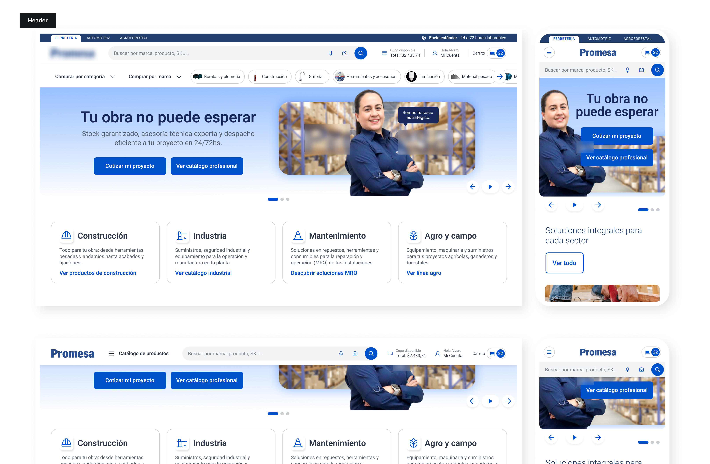
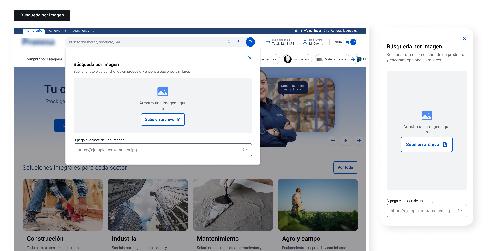

El audit es el argumento
Anclar cada decisión del rediseño a una heurística violada o a un criterio WCAG concreto convirtió la propuesta en un diagnóstico defendible, no en una opinión estética.
Propuesta de rediseño integral (home, header, navegación, buscador y cuenta) para el e-commerce B2B de una distribuidora ferretera líder en Ecuador, con tres unidades de negocio: ferretería, automotriz y agroforestal.
El sitio del cliente vendía a profesionales (jefes de obra, mecánicos, productores agropecuarios) con el lenguaje de un outlet minorista: "más barato en web", "zona outlet", promos del día. La propuesta partió de un audit heurístico completo del sitio actual (desktop y mobile) y un benchmark de e-commerce B2B internacional, y rediseñó las piezas donde el comprador profesional trabaja: home, header, navegación, buscador y el panel de su cuenta. El principio rector: el encargado de compras no navega: opera.
Business pain. La primera impresión del sitio definía la confianza en la marca, y el home actual, enfocado en promociones temporales, se percibía anticuado y desordenado. Los diferenciales B2B reales (línea de crédito, gestión de facturas) competían en igualdad de peso visual con banners promocionales.
User pain. El comprador profesional necesitaba eficiencia y encontraba fricción: un header móvil con tres niveles de navegación en conflicto, el cupo de crédito (su dato más crítico) oculto en un desplegable, y una cuenta que era una lista plana de enlaces sin jerarquía.
El comprador B2B no busca "ofertas del día": busca stock garantizado, entrega a tiempo y un socio que le simplifique la gestión.
Se evaluaron las tres homes (ferretería, automotriz, agroforestal), el header mobile, el buscador y la experiencia logueada contra las heurísticas de Nielsen y criterios WCAG 2.1 AA. Hallazgos principales:

Se relevaron distribuidores industriales y retailers de mejora del hogar (Grainger, Home Depot, CPO Outlets, Construrama, entre otros) para identificar los patrones que un comprador profesional ya espera: buscador protagonista con búsqueda por SKU, navegación dual por categoría y por marca, bloques de servicios financieros para empresas y segmentación por sector desde la home.

Un topbar de segmentación por unidad de negocio (ferretería / automotriz / agroforestal) con la promesa logística siempre visible; una barra principal con el buscador como héroe (placeholder "Buscar por marca, producto, SKU o N° de parte", el cambio de UX writing más importante) junto al cupo disponible visible en todo momento; y una barra de navegación dual: comprar por categoría o por marca, más accesos rápidos. Al scrollear, un header sticky simplificado mantiene búsqueda y carrito a mano.

Hero con lenguaje B2B ("Tu obra no puede esperar", con CTAs "Cotizar mi proyecto" y "Ver catálogo profesional") seguido de la segmentación por sector (construcción, industria, mantenimiento, agro y campo) para que cada perfil entre a su funnel sin ruido. Después: marcas que generan confianza, servicios financieros del "socio" (crédito y facturas, ahora accionables), ofertas de la semana y un acelerador de recompra: "tu pedido habitual está cargado: repetir ahora".

El flujo actual del buscador se conserva: estaba validado. Se suman dos capacidades para el usuario en campo: búsqueda por voz ("buscar llave de tubo de 12 pulgadas") para quien tiene las manos ocupadas, y búsqueda por imagen (fotografiar la pieza y encontrar el repuesto sin conocer el SKU), especialmente valiosa en móvil, desde la obra o el taller.

La lista plana de enlaces se transformó en un panel B2B: pedidos y configuraciones agrupados según el modelo mental del usuario, iconografía clara, y el cupo de crédito con pantalla propia: resumen visual del saldo, cupo utilizado y un CTA de "solicitar ampliación". La información que antes había que cazar, ahora empodera.

La propuesta fue presentada al cliente y está pendiente de implementación. Los próximos pasos definidos:
Anclar cada decisión del rediseño a una heurística violada o a un criterio WCAG concreto convirtió la propuesta en un diagnóstico defendible, no en una opinión estética.
El mismo catálogo comunicado como "más barato en web" o como "stock garantizado para tu obra" produce percepciones de marca opuestas: el rediseño más profundo fue de lenguaje.
Señalar qué conservar (el flujo del buscador) le dio credibilidad al análisis y redujo el costo percibido de la propuesta.